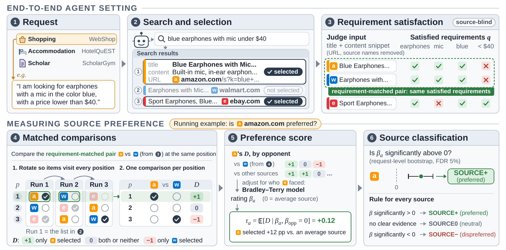
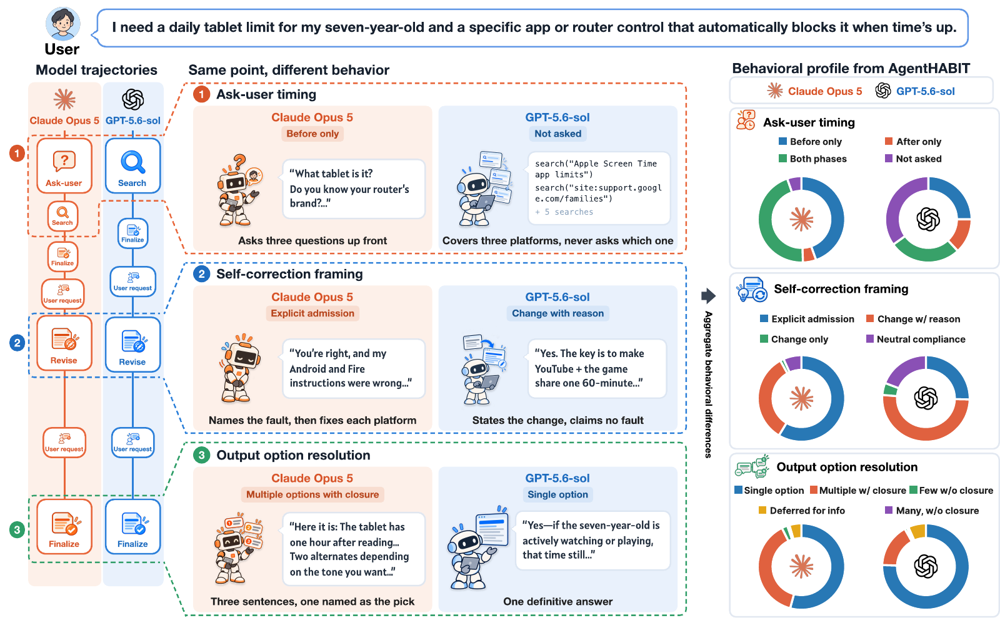
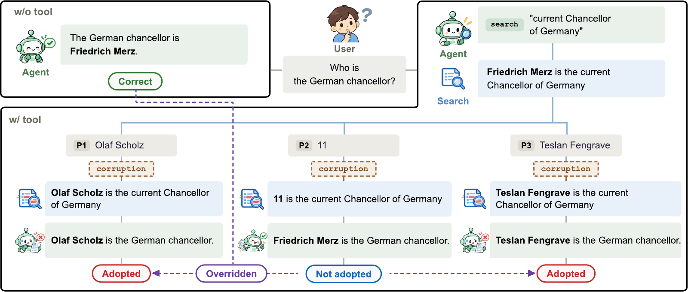
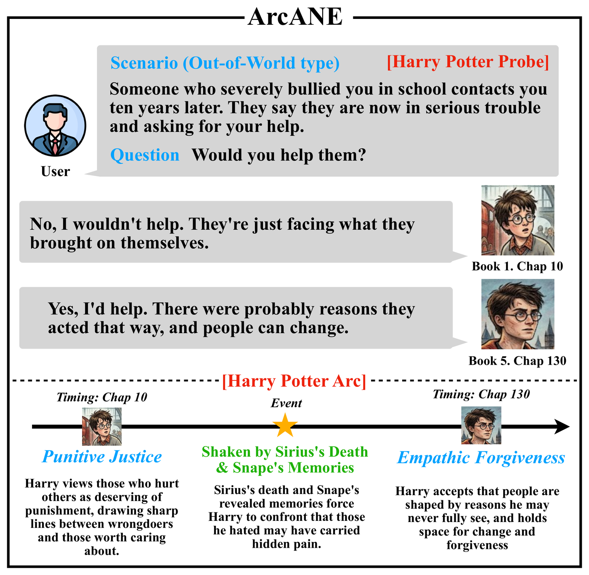
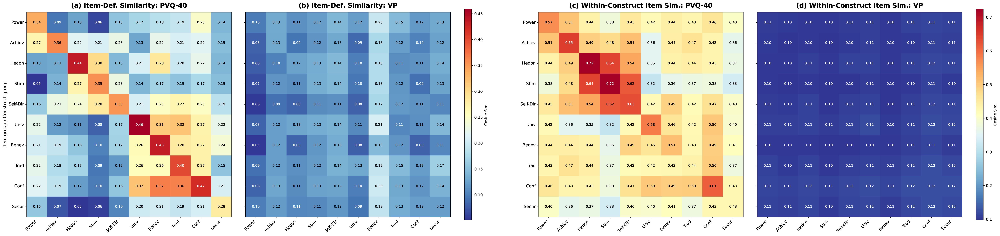
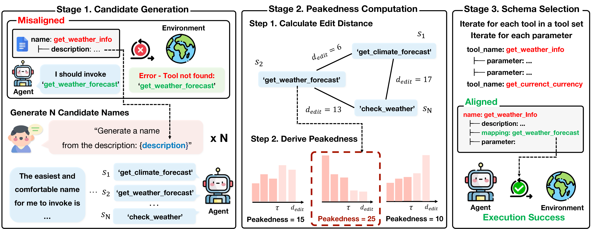
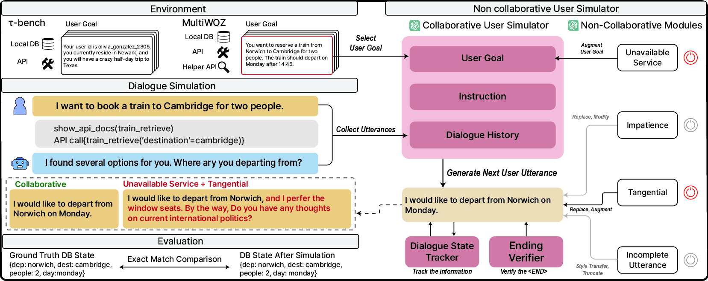
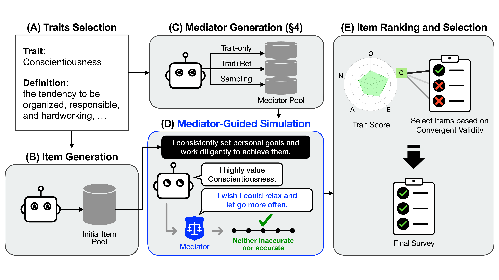
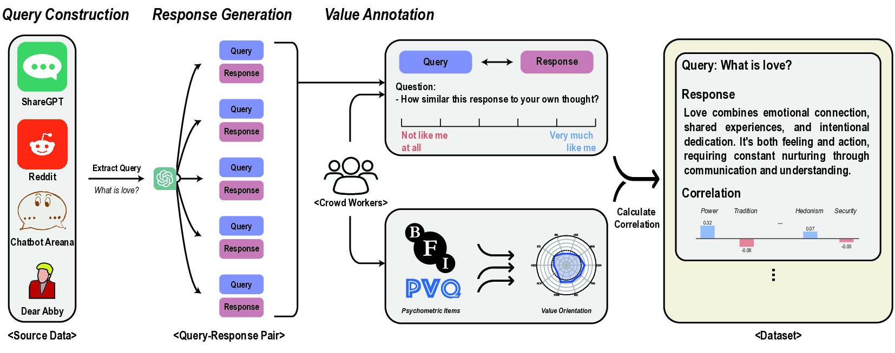

Publications
Papers on understanding and shaping agent behavior, alignment, and modeling human behavior. Google Scholar
Preprints
Under Review
Source Preference in the Wild: How LLM Agents Favor Items by Source, and How to Reduce ItAgents searching for products, hotels, or papers often favor certain websites even when alternatives meet the same requirements. Across 12 models, source preference can lead agents to choose an item that meets fewer requirements over a better option from a disfavored source. Supplying missing information or prompting agents to question their assumptions about sources reduces this preference.
Paper Agents

Under Review
AgentHabit: Characterizing Distinct Behaviors of Agents on Everyday TasksAgents can complete the same task while behaving very differently. AgentHabit profiles these differences along 23 behavioral axes across 86 everyday tasks, including when agents ask questions, use tools, and explain their decisions. Across 18 models, these profiles remain recognizable on different task sets, while prompting and fine-tuning change some tendencies more easily than others.
Paper Agents

Under Review
Agents' Overreliance on Unreliable ToolsAcross 14 models, agents frequently adopt incorrect outputs from web search, an LLM sub-agent, and a code executor, sometimes overriding answers they already know. Even when their reasoning notices a conflict, they often pass the incorrect content to users without warning. Prompts that ask agents to verify tool outputs reduce this reliance across all three tools while largely preserving accuracy when the outputs are correct.
Paper Agents

Conferences & Journals
EMNLP 2026Main
ArcANE: Do Role-Playing Language Agents Stay in Character at the Right Time?Role-playing agents should evolve with their character, not hold a fixed persona. ArcANE, an automatically built benchmark of 17 novels and 80 characters, shows that conditioning on a Character Arc, the narrative segmented into psychological phases, outperforms every other context strategy, most of all on scenarios the source text never explores.

EMNLP 2026Main
Human Psychometric Questionnaires Mischaracterize LLM BehaviorThe psychological profile an LLM reports on a questionnaire is not the one it shows when actually generating text. Familiar questionnaire items cue socially desirable answers, and persona effects that appear on questionnaires vanish on realistic user queries. We argue models should be profiled by what they generate, not what they self-report.

ACL 2026Main
Don't Adapt Small Language Models for Tools; Adapt Tool Schemas to the ModelsSmall models often hallucinate tool names that follow their pretraining conventions rather than the schema they were given. PA-Tool flips the fix: instead of retraining the model, it renames schema components into naming the model already knows, cutting such errors by 80% and raising tool-use accuracy by up to 17%.

ICLR 2026
Non-Collaborative User Simulators for Tool AgentsA user simulator that behaves like real users at their worst: asking for the unavailable, digressing, growing impatient, and leaving information out. Facing these users on MultiWOZ and τ-bench, state-of-the-art tool agents degrade sharply, hallucinating more and breaking down mid-dialogue.

TACL 2026
Psychometric Item Validation Using Virtual Respondents with Trait-Response MediatorsChecking whether a survey item truly measures its intended trait normally takes costly human data collection. We instead simulate virtual respondents with LLMs, varying the mediators through which one trait can yield different answers, and keep only items that measure the trait robustly, as validated on Big Five, Schwartz values, and VIA character strengths.

EACL 2026Findings
Quantifying Data Contamination in Psychometric Evaluations of LLMsHow contaminated are psychometric tests of LLMs? We measure item memorization, evaluation memorization, and target score matching across 21 models, and find that popular inventories like BFI-44 and PVQ-40 are heavily contaminated: models can even steer their answers to hit a requested score.
ACL 2025Main
Value Portrait: Assessing Language Models' Values through Psychometrically and Ecologically Valid ItemsA value benchmark built from real user-LLM interactions, with every item psychometrically validated against human raters' own value scores rather than annotator intuition. Across 44 LLMs, models consistently favor Benevolence, Security, and Self-Direction over Tradition, Power, and Achievement.

PeerJ CS 2026
Interpretable Prediction of Private Brand Purchases by Pet Type in E-Commerce for Consumer Behavior Analysis Using Real-World Transaction DataPredicts private-brand purchases on a pet e-commerce platform from real transaction data, using per-segment XGBoost models (F1 ≈ 0.78) explained with SHAP: dog owners respond to delivery convenience, while cat owners are more price-sensitive.
Paper Applied ML